Elastic Kubernetes Service (EKS) on AWS
Create and manage
Kubernetes
workloads in
AWS
using
EKS
,
eksctl
,
kubectl
, and the course cloud environment.
🎯 Objective
In this lab, we will learn about the concepts and tools needed for creating and working with an
Amazon EKS
cluster.
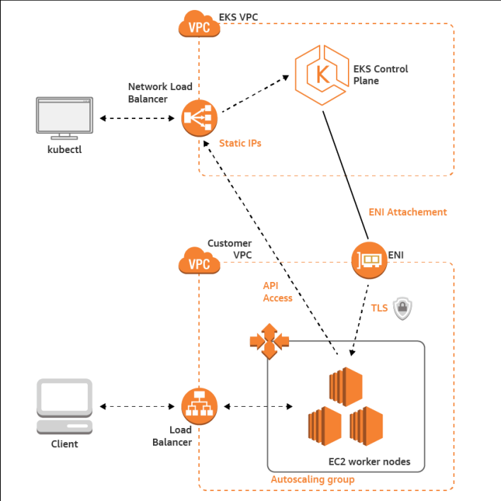
The above diagram provides a conceptual overview of how
EKS
works. It's crucial to understand the two main parts:
-
EKS Control Plane (in EKS
VPC) : This is the "brain" of yourKubernetescluster. It's fully managed byAWSin a separate, secure AWS-managed Virtual Private Cloud (VPC). You don't have direct access to these master nodes, but you interact with them via the Kubernetes API. This is the core value of EKS – AWS handles the complexity, availability, and scaling of thecontrol planefor you. -
Customer VPC: This is your VPC where your applications run.
-
EC2Worker Nodes: These are the EC2 instances that you launch and manage (or have EKS manage for you). Your application containers (pods) will run on these nodes. They are grouped into an Autoscaling group to automatically scale the number of nodes up or down based on workload. -
ENI (Elastic Network Interface): The control plane communicates with your worker nodes through these network interfaces that are placed in your VPC's subnets. This is the secure bridge between the AWS-managed VPC and your VPC.
-
Load Balancer: When you want to expose your application to the internet, Kubernetes works with AWS to automatically provision a Load Balancer. This directs external traffic from clients to the correct worker nodes running your application.
-
kubectl: This is the command-line tool you will use on your local machine or a bastion host (a dedicated management server) to send commands to the EKS Control Plane's API server.
-
☁️ Amazon EKS lab overview
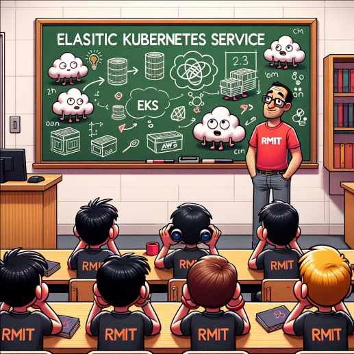
For this session, we will learn how to set up a basic
Elastic Kubernetes Service
(
EKS
) on
AWS
. EKS is a managed container
service
to run and scale
Kubernetes
applications in the cloud or on-premises.
Getting started with
Amazon EKS
is easy:
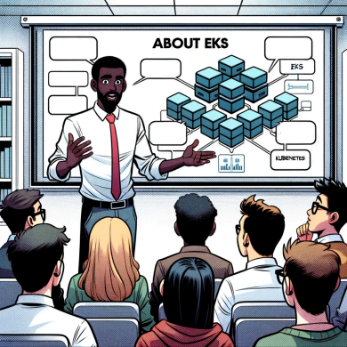
-
Create an Amazon EKS cluster in the AWS Management Console.
-
Launch managed or self-managed Amazon
EC2nodes. -
When your cluster is ready, you can configure your favorite Kubernetes tools, such as
kubectl, to communicate with your cluster. -
Deploy and manage workloads on your Amazon EKS cluster the same way that you would with any other Kubernetes environment. You can also view information about your workloads using the AWS Management Console.
Alright! Let's get started!
🔐 1. Understand the LabRole IAM role
-
The
AWSlearner lab does mention that we need to use theIAMrole “LabRole” to manage/controlEKS.
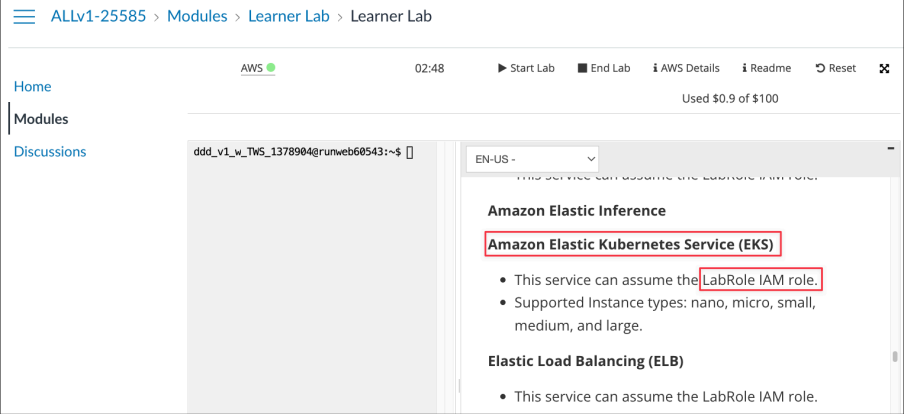
[Explanation]
It suggests that
Amazon
EKS
in this lab environment has the permissions necessary to function via the
LabRole
IAM role. This is the constraint of this specific learner lab environment. Both the EKS
control plane
and the worker nodes need permissions to interact with other AWS
services
. For example, the control plane needs to create Load Balancers, and worker nodes need to pull container images from
ECR
(Elastic Container Registry). The LabRole is an identity with a set of permissions that EKS will "assume" to perform these actions on your behalf. The screenshots confirm that in this specific lab environment, EKS is configured to use this role.
Least-privilege checkpoint: Why might the EKS control plane, worker nodes, and management instance need different permissions? What risk is introduced when one broad role is reused everywhere?
-
Let's find more information about this special IAM role “LabRole”:
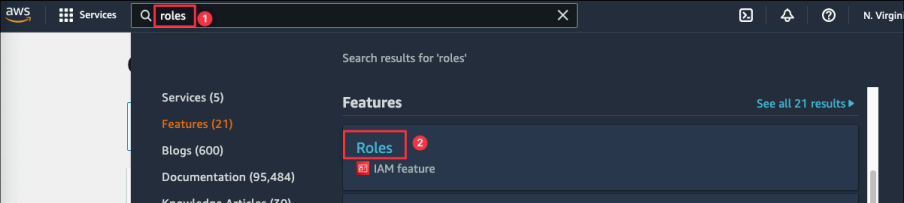
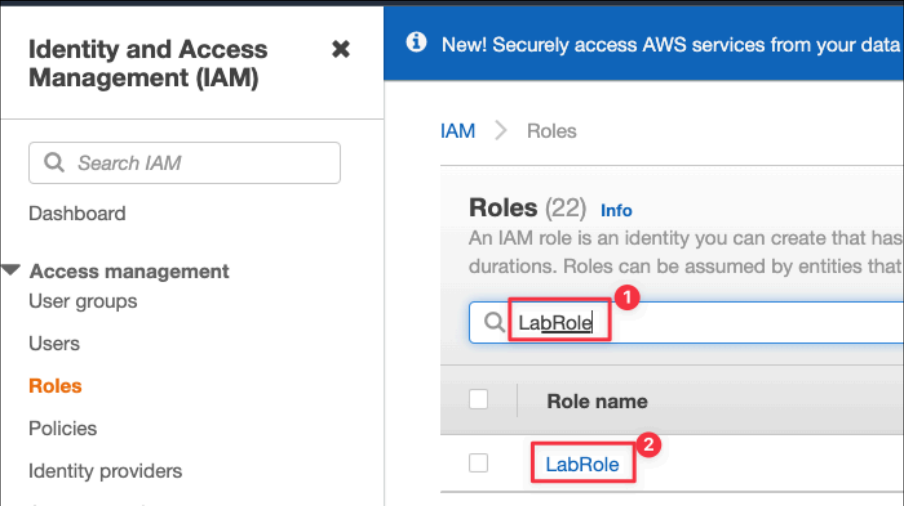
-
If you look closely at all permissions of LabRole, you can see the permission to access EKS services:
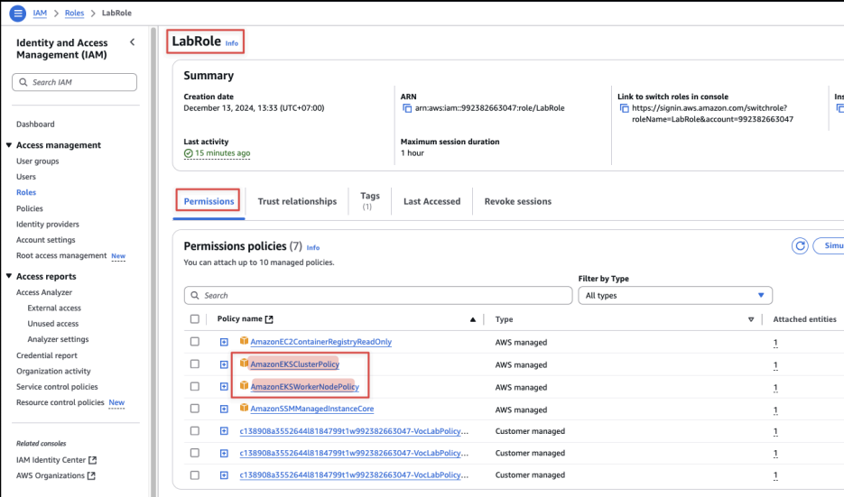
[Explanation]
The LabRole has AWS-managed policies that grant the permissions needed for operating Amazon
Elastic Kubernetes Service
(EKS) clusters:
-
AmazonEKSClusterPolicy: This policy is attached to the Cluster IAM role. It grants the EKS control plane permissions to manage AWS resources required by the cluster, such as creating Elastic Load Balancers (ELBs) and managing network interfaces (ENIs).
-
AmazonEKSWorkerNodePolicy: This policy is attached to the Node IAM role (the role for the
EC2worker nodes). It grants the worker nodes the necessary permissions to connect to the EKS control plane and perform actions like fetching container images.
You need two distinct sets of permissions: one for the cluster's brain (control plane) and one for its muscles (worker nodes). In this lab, the LabRole conveniently has both.
That's good enough for this IAM role “LabRole” to create an EKS cluster now!
🖥️ 2. Prepare the EKS management instance
Now, let's create an
EKS
cluster!
-
You can check out the
Elastic Kubernetes Service(EKS) dashboard here:
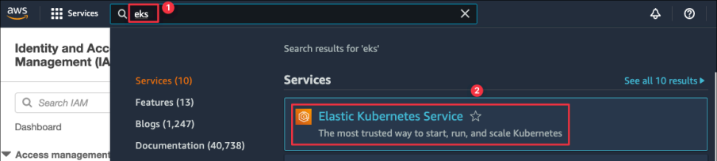
-
Click “Add cluster” ➜ Create to create a new EKS cluster!
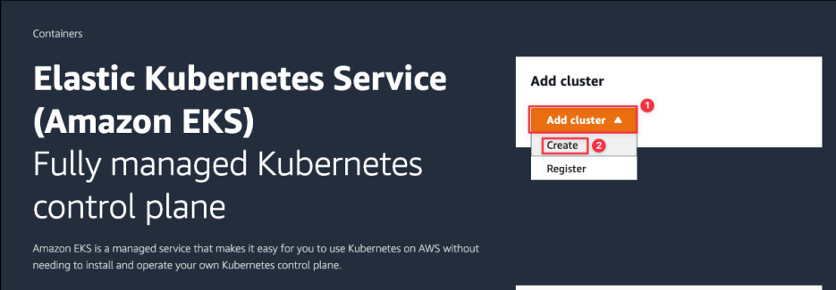
-
Create the cluster with the following settings:
-
Choose Custom configuration:
-
Turn off the EKS Auto Mode.
-
-
Name cluster:
devops-eks-cluster. -
Cluster
servicerole:LabRole. -
VPC: your default VPC. -
Subnets:
-
us-east-1a
-
us-east-1b
-
us-east-1c
-
-
Let’s select our cluster endpoint access to be public!
-
Other settings: leave their default values.
-
-
Turn off EKS Auto Mode: This is because the LabRole lacks the specific permissions for this feature.
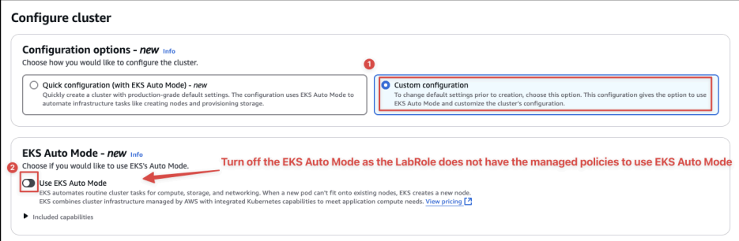
-
Cluster
IAMrole: You are selecting the LabRole you investigated earlier. This tells EKS which permissions it can use to manageAWSresources.
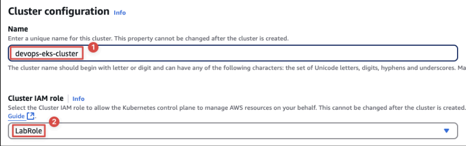
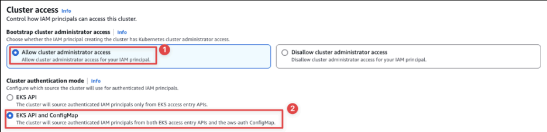
-
Subnets : Selecting subnets across three different Availability Zones (us-east-1a, us-east-1b, us-east-1c) is a best practice for high availability. If one data center (AZ) has an issue, your cluster's
control planeremains operational in the other two:
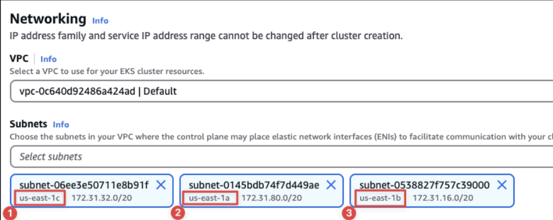
[Explanation]
Choosing the right subnets for your
Amazon EKS
cluster is crucial for security, performance, and cost management. Here are some best practices to consider when selecting subnets for your EKS cluster:
-
Use Multiple Availability Zones: Deploy your EKS cluster across multiple Availability Zones (AZs) by selecting a subnet in each desired AZ. This ensures high availability and fault tolerance. If one zone goes down, your cluster can continue operating in the other zones.
-
For the purpose of learning: we would like to keep it simple by selecting three zones us-east-1a, us-east-1b, and us-east-1c which are usually available for the AWS Learner Lab.
-
Please create a security group in
EC2as following:
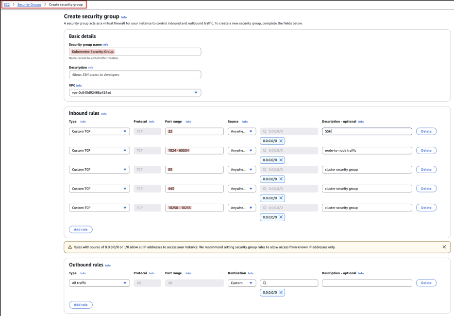
-
Select that security group for our
Kubernetescluster:
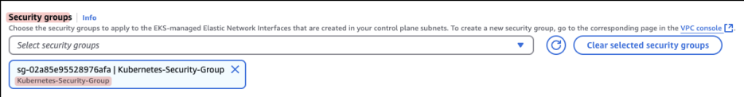
-
Cluster endpoint access: The "Public" option is selected. This means the Kubernetes API server endpoint is accessible from the internet. This is necessary so you can run
kubectlcommands from your management instance. There are also "Private" options for higher security scenarios where the API is only accessible from within the VPC.
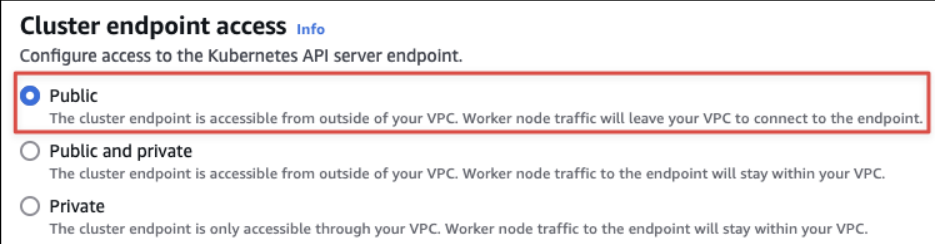
-
Creation Process: The note correctly states that cluster creation takes time (around 15-20 minutes). This is because AWS is provisioning a highly available, multi-node control plane in the background.
-
This process of creating an EKS cluster will take around 20 minute s to complete to please wait around for it to finish!
-
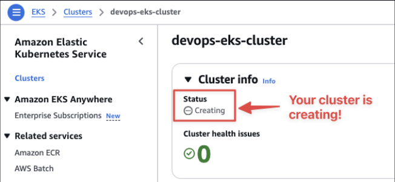
-
Meanwhile, you can try to complete other things first by adding the access to the cluster!
-
While the cluster is being created, you can configure who has access to it. This is a great time-saving tip.
-
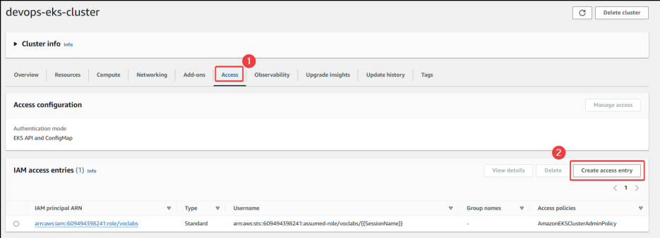
-
This step is about mapping an AWS identity (the LabRole) to a Kubernetes identity.
-
IAM principal
ARN: You are telling EKS, "Any user or process that assumes the LabRole should be allowed to interact with this cluster's API." -
Username - Optional: The note "Leave it be!" is good advice. If you leave this blank, EKS automatically maps the IAM role to a username within Kubernetes. This is the standard and recommended practice.
-
This process is part of EKS's native integration with IAM, which simplifies authentication compared to older methods that required managing a ConfigMap manually.
-
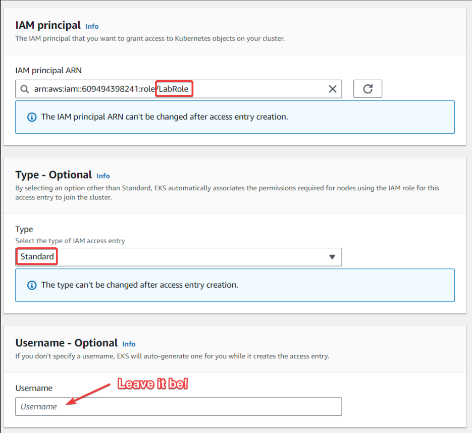
-
After telling EKS who can access the cluster (the LabRole), this step defines what they can do. These are pre-defined EKS access policies that correspond to standard Kubernetes
RBAC(Role-Based Access Control) roles:-
AmazonEKSClusterAdminPolicy : This is the highest level of permission, equivalent to cluster-admin in Kubernetes. It grants full control over all resources in the cluster.
-
AmazonEKSAdminPolicy , AmazonEKSEditPolicy , AmazonEKSViewPolicy : These provide progressively fewer permissions, useful for assigning roles with the principle of least privilege.
-
By adding these, you are granting the LabRole the ability to act as a full administrator of the Kubernetes cluster.
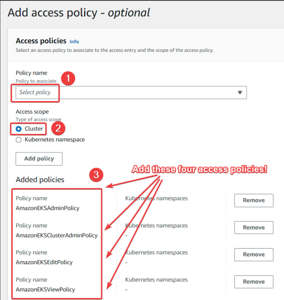
-
After that, you can confirm these four roles have been associated with our LabRole to be able to manage our EKS cluster properly. When managing an EKS cluster, these roles and policies help delineate responsibility and control access to the cluster's resources:
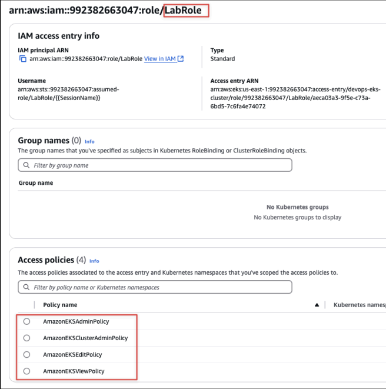
-
This is a verification step. It should show that the LabRole now has an access entry and is associated with the four policies you just added. You can also see other default entries, like the one for the AWSServiceRoleForAmazonEKS, which is used by EKS internally. This confirms that your permissions are set up correctly before you proceed.
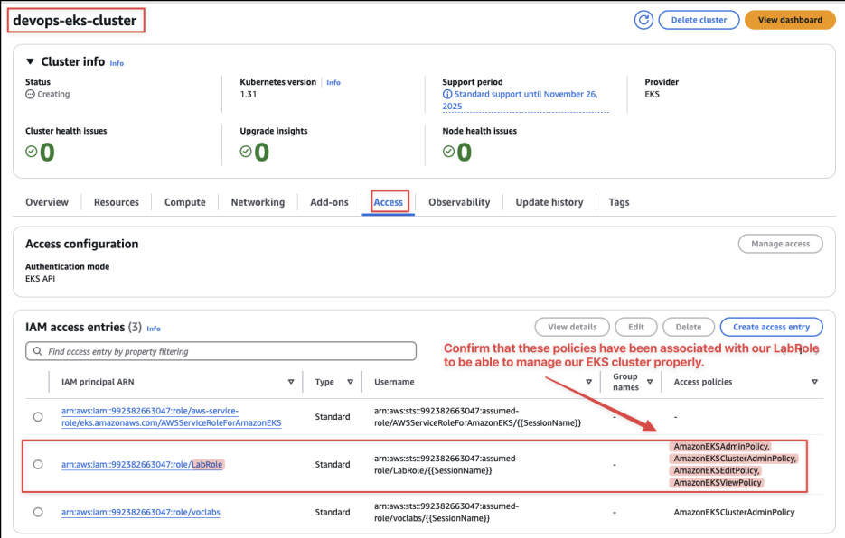
-
To be able to proceed to the next step, you need to wait for this cluster to be created first (it could take up to 20 minutes)!
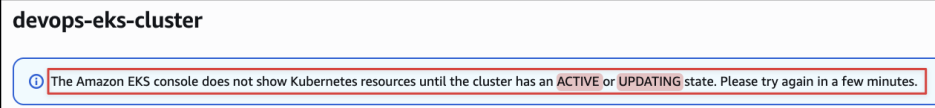
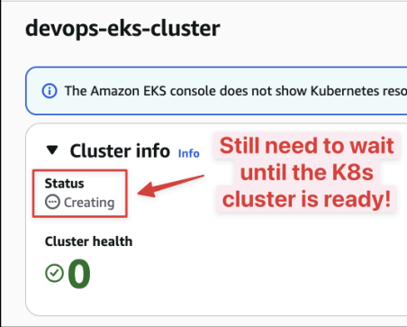
-
Wait until the cluster status is Active before creating the node group.
-
This is a simple but important milestone. It means the EKS control plane is fully provisioned and ready to accept commands. However, the cluster is not yet useful because it has no worker nodes to run any applications. This page serves as a transition to the next logical step: creating the
node group.
-
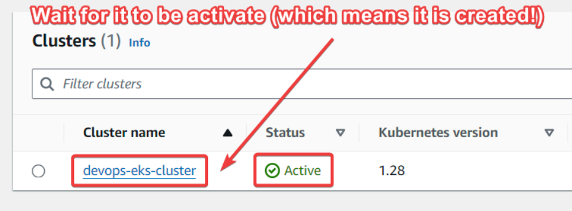
-
Next, create a managed node group so the cluster has compute capacity on which to schedule Pods.
-
Compute Tab : This is where you manage the compute resources (the worker nodes) for your cluster.
-
Add node group: This starts the wizard to create a group of EC2 instances that will register themselves with your EKS control plane.
-
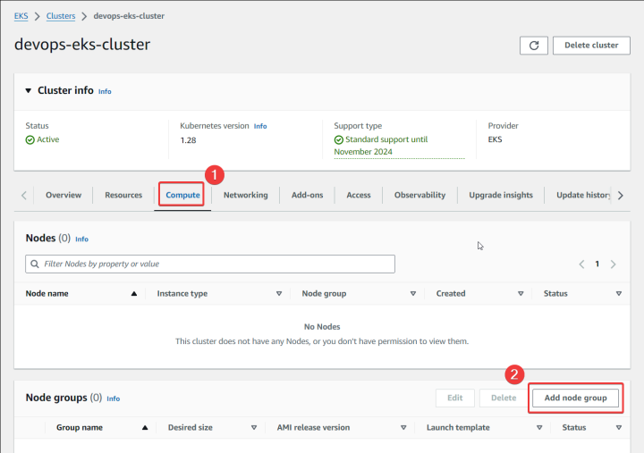
-
Please create a worker node group with configurations as below screenshots:
-
Node group name: A descriptive name like
devops-workers-groupis chosen. -
Node IAM role : You are again selecting LabRole. This is the role the EC2 instances themselves will assume to get the permissions defined in the AmazonEKSWorkerNodePolicy (e.g., to communicate with the control plane).
-
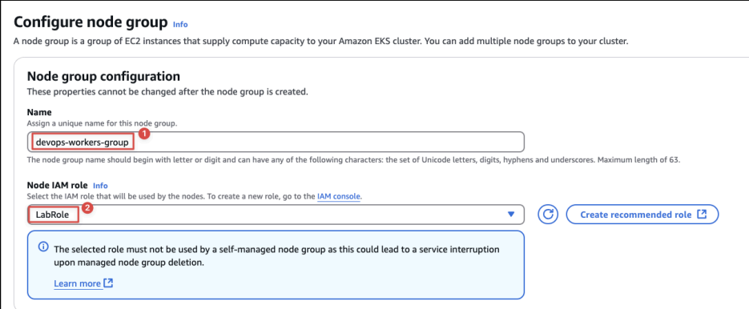
-
This section defines the properties of the EC2 instances in your node group:
-
AMI type: Amazon Linux 2023 is selected. This is an EKS-optimized Amazon Machine Image that comes pre-configured with necessary software like the container runtime (containerd) and the kubelet.
-
Capacity type : On-Demand is chosen, which means you pay a fixed hourly rate for the instances. The alternative is Spot, which can be much cheaper but instances can be terminated with short notice.
-
Instance types: t3.medium is selected. This defines the vCPU, memory, and network capacity of your worker nodes.
-
Disk size: 20 GiB is allocated for the root volume of each EC2 instance.
-
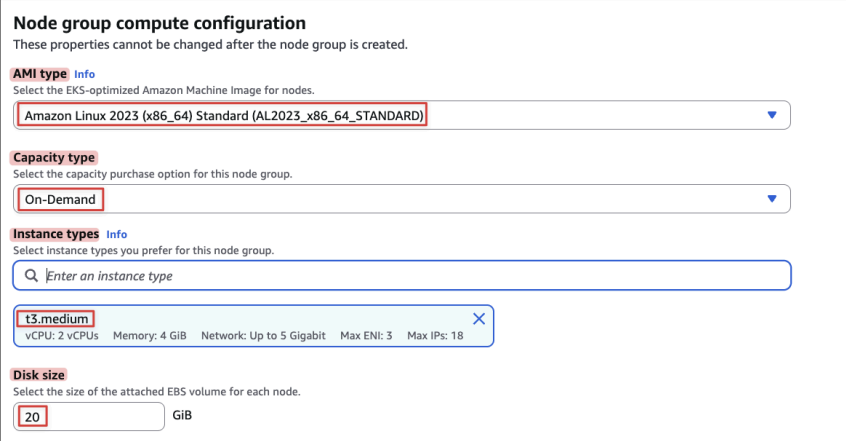
-
These settings below allow you to define the scaling parameters for a group of worker nodes within the cluster:
-
Desired size : This is the number of worker nodes you want in the node group at the outset. The system will aim to maintain this number of nodes as the desired state. In the screenshot, it's set to 2 nodes.
-
Minimum size : This is the lowest number of nodes that the group can scale down to. This ensures that there is a minimum level of resources available for workloads at all times. Here, it's also set to 2 nodes, meaning scaling down below this number is not allowed.
-
Maximum size : This sets the upper limit of nodes that the group can scale up to. It's a ceiling for the scaling operation to ensure that the cluster doesn't grow beyond a manageable size or incur unexpected costs. The maximum size here is set to 2 nodes, indicating that the group should not scale up beyond this point.
-
The configuration is such that the node group is set to operate with exactly 2 nodes at all times, as the desired, minimum, and maximum sizes are all the same. This kind of configuration might be used in scenarios where predictable performance is needed, and the workload does not have significant fluctuations that would require scaling the number of nodes up or down.
-
-
Note : The most important part is the explanation of the scaling parameters. Here, Desired, Minimum, and Maximum size are all set to 2. This creates a fixed-size node group that will always have exactly two worker nodes. It will not scale up or down. This is simple for a lab but in a production environment, you would typically set min lower and max higher to allow for autoscaling.
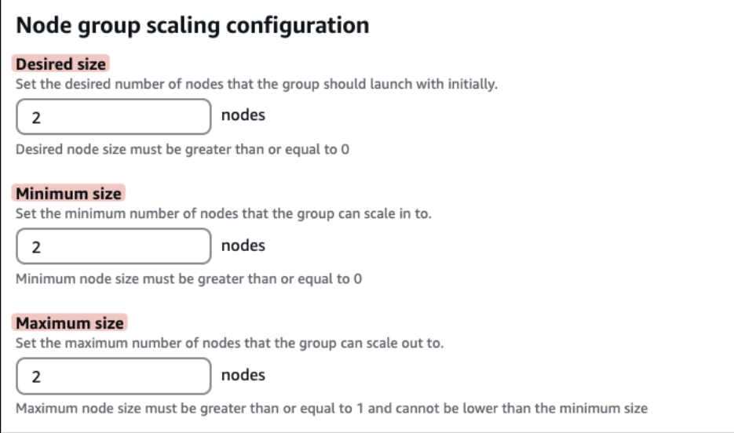
-
[Explanation] These settings below allow us to manage the node group as a set of EC2 instances that are registered as nodes in a Kubernetes cluster managed by Amazon EKS:
-
Subnets: You are selecting the subnets where the worker nodes will be launched. These should be the same subnets you chose for the cluster control plane ENIs to ensure they can communicate.
-
Configure remote access to nodes: This is enabled to allow SSH access.
-
EC2 Key Pair: A key pair (
devops_key) is selected. This is essential for being able to SSH into the worker nodes for troubleshooting. -
Allow remote access from: Set to "All". As mentioned before, this is insecure for production but acceptable for a temporary lab.
-
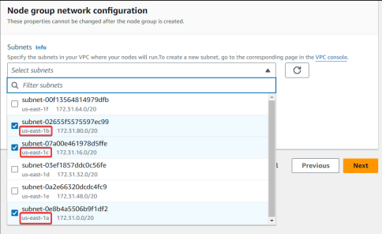
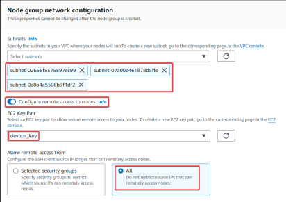
-
Submit the node-group configuration and wait until its status is Ready.
-
When you create a node group, EKS uses an Auto Scaling Group to launch the requested number of EC2 instances.
-
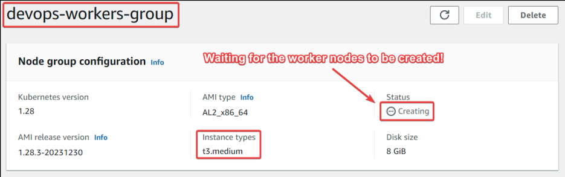
-
The cool thing is that you can go to the EC2 dashboard and see two EC2 instances are created as worker nodes in our EKS cluster! Nice!
-
The image confirms that the worker nodes have been created, have successfully registered with the EKS control plane, and are ready to accept workloads.
-
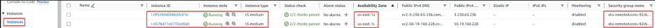
-
After some time, the worker node group is created with the status “Ready” for all of the worker nodes!
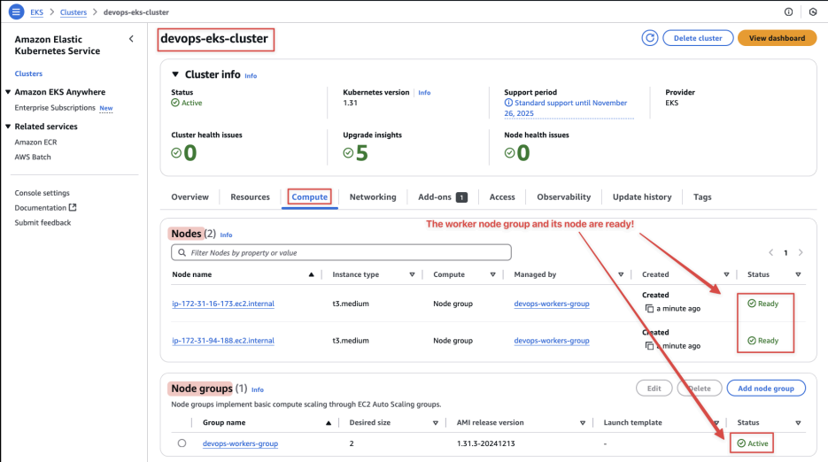
☁️ 2a. Create the EC2 management instance
-
Let's create an
EC2instance which containsAWSCLI (to control AWSservices),eksctl(to createEKSclusters) andkubectl(to control the cluster):
In this experiment, we only need one single EC2 instance:
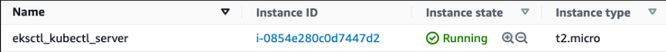
-
Here are the settings of the EC2:
-
Name:
eksctl_kubectl_server -
OS: Amazon Linux 2023 AMI (Latest one)
-
Instance Type: t3.micro (Free-tier)
-
Key pair: create a new key or reuse the old key.
-
Storage: Default 8 GB is plenty enough!
-
Security Group:
-
Optional Name:
eksctl_kubectl_server_security_group -
Source Type: Anywhere
-
Open only one port:
-
22 for SSH
-
-
-
🔐 2b. Attach the LabRole IAM role
-
Let’s wait for the
EC2instance state to be “Running” first. After that, let's attach theIAMrole “LabRole" to this EC2 instance so this EC2 can execute commands as “LabRole”:-
Why attach a role?
-
By attaching the LabRole (or in this case, a similar LabInstanceProfile) to the EC2 instance, you grant the
AWS CLIrunning on that instance the permissions of that role. -
This means you don't need to configure static
AWSaccess keys (aws configure). The instance automatically retrieves temporary credentials, which is a much more secure practice. -
Now, any aws or
eksctlcommand you run from this instance will be authenticated as the LabRole, which has the necessary permissions to interact with yourEKScluster.
-
-
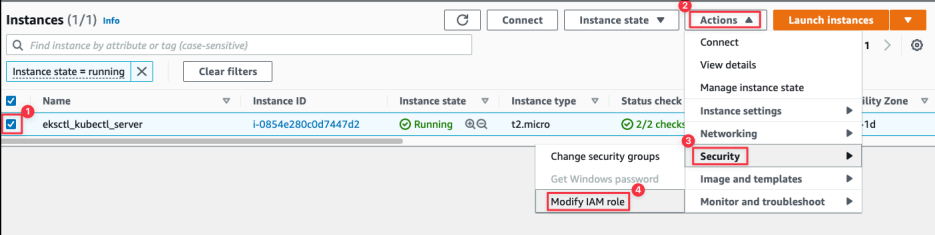
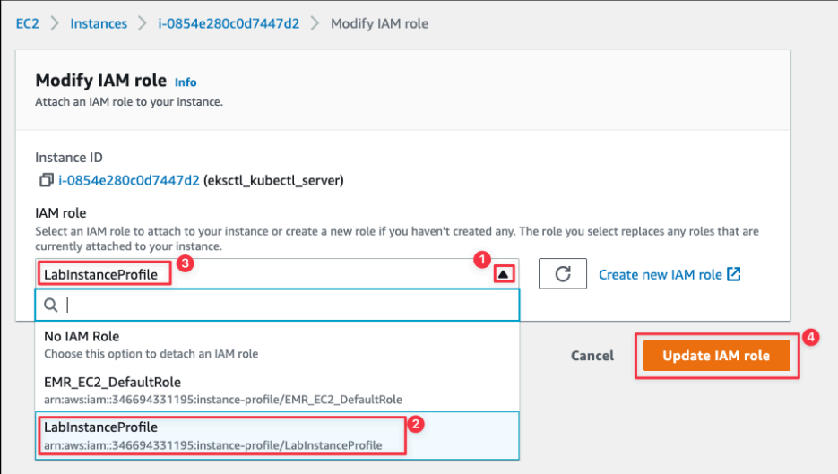
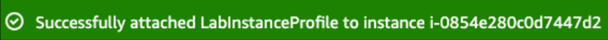
☁️ 2c. Set the EC2 hostname
-
After the
EC2instance is running, please SSH to that EC2 instance “eksctl_kubectl_server” you just created:
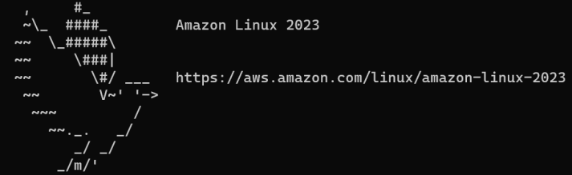
-
Also, please change the hostname of this instance to “
eksctl-kubectl-server” to keep it organized like so:
sudo nano /etc/hostname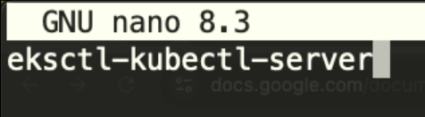
-
Reboot the EC2 instance so the new hostname is updated:
sudo reboot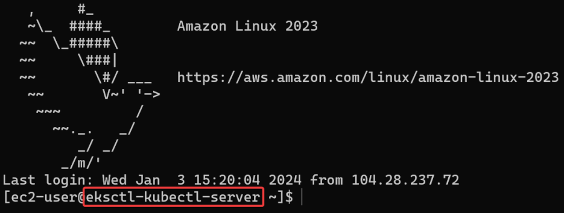
-
To keep things simple without dealing with permission, let’s login as a root user and change our current directory to /root:
sudo su -⌨️ 2d. Verify the AWS CLI
-
We can check the current version of
AWS CLI:
aws --version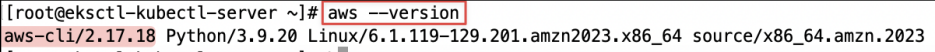
So the default version of AWS CLI is
2.17.18
which is good enough to meet the requirement to use
eksctl
which requires AWS CLI version >=
2.2.37
. Nice!!!
📦 2e. Install kubectl
-
Let’s install
kubectlwhich is the standard, open-source command-line tool for anyKubernetescluster. It's used for deploying applications, inspecting resources, and managing the cluster's state. -
Next, let's install kubectl so please refer to this documentation:
-
Install a
kubectlversion that matches your cluster’s minor version, or differs by no more than one minor version. The command below is an example for a Kubernetes 1.35 cluster; use the current URL listed in the AWS EKS installation guide if your cluster version differs. -
Download the kubectl binary for your cluster's Kubernetes version from Amazon S3:
curl -O https://s3.us-west-2.amazonaws.com/amazon-eks/1.35.3/2026-04-08/bin/linux/amd64/kubectl-
Apply execute permissions to the binary:
chmod +x ./kubectl-
Copy the binary to a folder in your PATH.
mkdir -p $HOME/bin && cp ./kubectl $HOME/bin/kubectl && export PATH=$PATH:$HOME/bin-
Add the $HOME/bin path to your shell initialization file so that it is configured when you open a shell.
echo 'export PATH=$PATH:$HOME/bin' >> ~/.bashrc-
After you install kubectl, you can verify its version with the following command:
kubectl version --client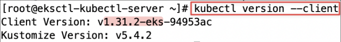
📦 2f. Install eksctl
-
Let’s install
eksctlwhich is a popular open-source tool sponsored byAWSthat simplifies manyEKS-specific tasks. While you created the cluster through the console, eksctl is excellent for creating clusters,node groups, and other resources from the command line. -
Next, let's install eksctl so please refer to this documentation:
-
Download and extract the latest release of eksctl with the following command.
curl --silent --location "https://github.com/eksctl-io/eksctl/releases/latest/download/eksctl_$(uname -s)_amd64.tar.gz" | tar xz -C /tmp-
Move the extracted binary to
/usr/local/bin.
sudo mv /tmp/eksctl /usr/local/bin-
Test that your installation was successful with the following command.
eksctl version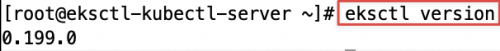
🔗 3. Connect kubectl to the EKS cluster
-
Alright, now we are ready to connect an
EKScluster! -
But first, we need to figure out what is our current Availability Zone of our
EC2instance:
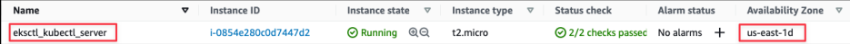
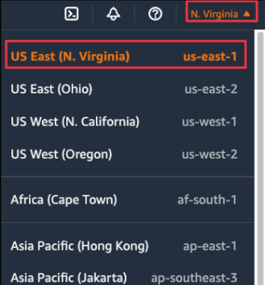
This example uses the us-east-1 Region (US East, N. Virginia).
-
The template command to connect an existing EKS cluster is:
aws eks update-kubeconfig --name <cluster-name> --region <zone-name>We need to change “cluster-name” to be the name of our cluster created before, “region-name” to be the name of the region we want to create our cluster.
Context checkpoint: What local configuration does aws eks update-kubeconfig change, and why should you verify the active context before running a destructive kubectl command?
-
Let's run this aws eks update-
kubeconfigcommand to connect an EKS cluster:
aws eks update-kubeconfig --name devops-eks-cluster --region us-east-1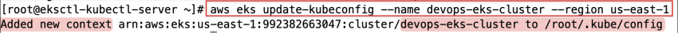
-
The file “
/root/.kube/config” is very important. Whoever got that file will have the permission to control our EKS cluster! Let's check out the config file of our EKS cluster to learn more about this file:-
The screenshot shows that the server URL and the certificate-authority-data in the file are the same as what's displayed in the
AWSEKS console. -
This confirms that your management instance is now fully configured to communicate with your EKS cluster.
-
cat /root/.kube/config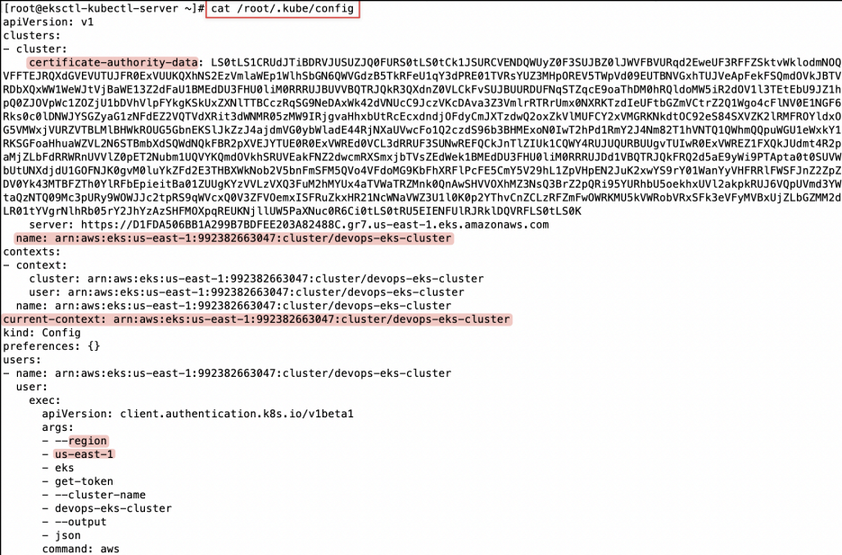
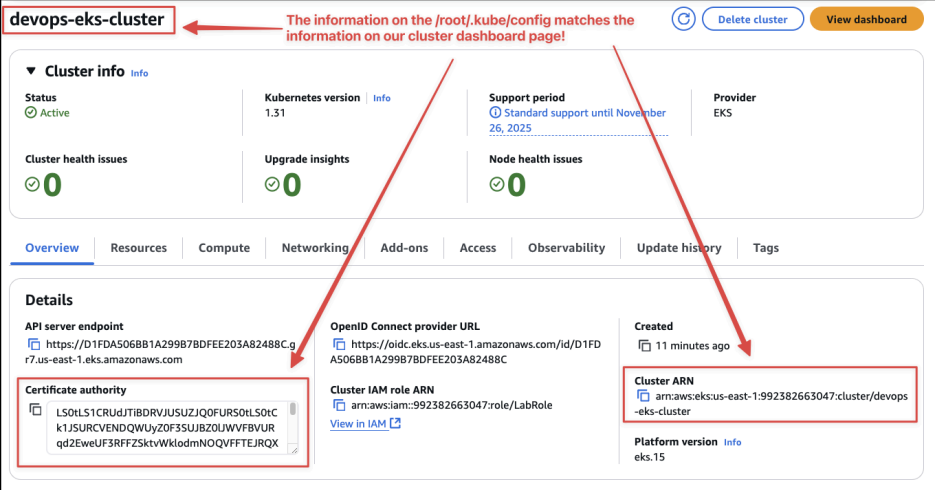
🚀 4. Deploy and manage workloads on EKS
🔍 4a. Inspect the EKS cluster
-
Let's display info of nodes in our cluster:
-
The
kubectlget nodes command is the "hello world" of cluster management. Seeing your two nodes with a Ready status is the final confirmation that your cluster is fully operational.Reachability checkpoint: Ready worker nodes do not prove that users can reach the application. Which layers would you verify next, such as Pods, Service endpoints, the load balancer, and security-group rules, and in what order?
-
kubectl get nodes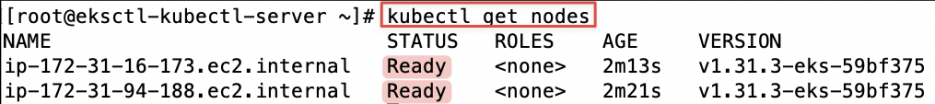
Both
EC2
worker nodes report Ready and can accept workloads.
-
Use
kubectl get allto list the main workload resources, includingpods,services:
kubectl get all
Initially, there is no other
service
yet!
-
Install git and clone the GitHub voting application repo:
yum install git -y
git clone https://github.com/TomHuynhSG/Simple-Voting-Application-Docker-
Change the current directory to be inside k8s-specifications folder where all of our k8s yaml files are located:
cd Simple-Voting-Application-Docker/aws-eks-example/k8s-specifications/-
Run these K8s yaml files to create
deploymentsand services to launch the voting application:-
The series of kubectl create
-f<filename>.yamlcommands is the core of deploying an application. Each command reads aYAMLfile and tells theKubernetesAPI to create the resources defined within it (Deployments, Services, etc.). The explanation correctly breaks down the purpose of each component: a frontend (voting-app), a backend database (postgres), a cache (redis), a processor (worker-app), and a results viewer (result-app).
-
kubectl create -f voting-app-deploy.yaml
kubectl create -f voting-app-service.yaml
kubectl create -f redis-deploy.yaml
kubectl create -f redis-service.yaml
kubectl create -f postgres-deploy.yaml
kubectl create -f postgres-service.yaml
kubectl create -f worker-app-deploy.yaml
kubectl create -f result-app-deploy.yaml
kubectl create -f result-app-service.yaml
[Alternative]
Instead of running each yaml file, you can also keep it simple by running “kubectl create
-f
.”
[Explanation]
Each command uses a
.yaml
file to create different resources within the Kubernetes cluster:
-
kubectl create
-fvoting-app-service.yaml& kubectl create-fvoting-app-deploy.yaml: These commands launch the front-end part of the voting application. Thevoting-app-service.yamldefines the service that exposes the voting app to the users through a web interface. Thevoting-app-deploy.yamldefines adeployment, which manages the creation and scaling of the voting app pods. -
kubectl create
-fredis-deploy.yaml& kubectl create-fredis-service.yaml: These commands are for deploying Redis, an in-memory data store used as a database, cache, and message broker. Theredis-deploy.yamlcreates the deployment for the Redis containers, whileredis-service.yamlexposes Redis to the other components of the application that require it. -
kubectl create
-fpostgres-deploy.yaml& kubectl create-fpostgres-service.yaml: These commands deploy a PostgreSQL database, which is a relational database used to persist data. Thepostgres-deploy.yamlhandles the deployment of the PostgreSQL containers, andpostgres-service.yamlmakes the database accessible to other parts of the application that need to store or retrieve data. -
kubectl create
-fworker-app-deploy.yaml: This command launches a background worker that processes tasks in the voting application, such as compiling and updating vote counts. Theworker-app-deploy.yamldefines how this worker operates and scales within the Kubernetes environment. -
kubectl create
-fresult-app-deploy.yaml& kubectl create-fresult-app-service.yaml: These commands are for the component that displays the results of the voting. Theresult-app-deploy.yamlsets up the deployment for the results application, andresult-app-service.yamldefines the service to expose the results to users or other applications.
Each
.yaml
file contains the configuration for a specific part of the application and its related Kubernetes resources. Together, they work to create a distributed, scalable voting application.
-
List out the deployment and services (svc) resources in the Kubernetes cluster:
-
The kubectl get deployments,svc command is used to check the status of the deployment. The key thing to look for is the
EXTERNAL-IPfor the services of type:LoadBalancer. This is the public DNS name of theAWSElastic Load BalancerthatEKSautomatically created for you. This is the URL you will use to access the application.
-
kubectl get deployments,svcThese above screenshots are the payoff! They show the voting and result websites being accessed via the Load Balancer URLs. The bottom image connects the abstract DNS name to a concrete "Load Balancer" resource in the EC2 dashboard, reinforcing the link between Kubernetes and the underlying AWS services.
[Explanation] The following output connects the application URLs to the Kubernetes resources running behind them:
-
The first table of deployment shows the list of deployment resources in the Kubernetes cluster. Deployments are responsible for creating and updating instances of your application. We can see four deployments with names such as
postgres-deploy,redis-deploy, etc. -
The second table of deployment shows the services in the Kubernetes cluster. Services in Kubernetes are an abstraction that defines a logical set of pods and a policy by which to access them, often via a network. The TYPE column indicates the kind of service, for example, ClusterIP which is a default type providing a service inside a cluster that other apps inside your cluster can access, and LoadBalancer which exposes the service externally to the cluster by using a cloud provider's load balancer. The
EXTERNAL-IPfor result-service and voting-service shows that these services are exposed outside of the cluster, likely allowing web traffic to reach the application. The red boxes highlight that the applications are accessible via the load balancers with external IP addresses and ports specified, suggesting that these services are reachable from outside the Kubernetes cluster. This is a common setup for web applications that need to be accessible to users or external systems. -
You can copy and paste the URL of these load balancers to access the voting website and the result website like below here:
-
Note: make sure your url has the http protocol like http:// … Otherwise the websites won’t be loaded without the correct URLs.
-
-
Also, you can investigate further in the load balancer by going to the load balancer dashboard to look for the right balancer with the same DNS name like so:
-
This screenshot below shows the details of the AWS Load Balancer. The key takeaway is the "Listeners" section. It shows that the load balancer is listening for traffic on
port 80(standard HTTP) and forwarding it to a TCP port on the worker nodes (in this case, 30790). Kubernetes manages this port mapping automatically.
-
List the Pods, Services, Deployments, and ReplicaSets for further investigation:
-
The kubectl get all c ommand provides a comprehensive view of all the resources created. The explanation correctly identifies the four main types of objects:
-
Pods: The actual running instances of your application containers.
-
Services: The networking layer that exposes your pods.
-
Deployments: The controller that manages the Pods and ensures the desired number of replicas are running.
-
ReplicaSets : A lower-level controller managed by the Deployment, responsible for maintaining a stable set of replica Pods.
-
kubectl get all[Explanation] The command groups the cluster's main workload and networking resources into four sections:
-
Pods : The first section lists the pods, which are the smallest deployable units that can be created and managed in Kubernetes. Each
podrepresents a running process on your cluster. In this case, there are pods for PostgreSQL, Redis, a result app, and a worker app, each of which is running (1/1 READY) and has not been restarted since they were deployed (0 RESTARTS). -
Services : The second section lists the services, which provide stable endpoints for connecting to the pods. The services shown are for the database (db), Kubernetes itself (kubernetes), Redis, and two services related to the voting application (result-service and voting-service). The result-service and voting-service are exposed externally (LoadBalancer), which means they can be accessed from outside the Kubernetes cluster. External IP addresses are provided for these services, indicating where the services can be accessed.
-
Deployments : The third section shows the deployments, which provide declarative updates to applications. A deployment allows you to describe an application’s life cycle, such as which images to use for the app, the number of pods, and the way to update them, among other aspects. There are deployments for PostgreSQL, Redis, the result app, and the worker app, all up-to-date and available.
-
ReplicaSets : The last section lists the replica sets, which ensure that a specified number of pod replicas are running at any given time. This is useful for scaling and self-healing of the application. Each of the replica sets corresponds to one of the deployments and shows the desired count of replicas, which is 1 in this case, and the current count, which matches the desired count.
-
The nice thing about EKS is to allow you to use EKS cluster dashboard with the “Resources” tab to monitor and check the components inside your cluster:
-
These below screenshots show the graphical equivalent of the kubectl commands. The AWS EKS console provides a user-friendly way to view the status of your Pods , Deployments , Services , and other Kubernetes resources. This can be very helpful for quick visual checks and for users who are less comfortable with the command line.
-
-
Let’s clean up everything by deleting all resources in this kubernetes!
-
Before deleting, you might want to list all the resources in the default namespace to review what will be deleted.
kubectl get all --namespace=default-
You can delete all resources in the default namespace using the following command. This command deletes pods, services, deployments, replicasets, etc.
kubectl delete all --all --namespace=default-
[Optional] If you want to delete specific types of resources only (like pods or services), you can specify the resource type.
kubectl delete pods,services --all --namespace=default🎁 Bonus activity: Practise with Nginx pods
Maybe the above voting application is a good way to show off what
Kubernetes
can do! However, if you find the above voting application is a bit too complex for you to understand then please continue these bonus activities which provides a simpler, hands-on, step-by-step example to create yaml files as well. Hopefully, these bonus activities below are more friendly and suitable for beginners!
🧪 4b. Create one test pod
-
Let's create a
podin our cluster using the httpd image from Docker Hub:-
kubectlrun is a simple, imperative way to create a single pod. It's great for quick tests.
-
kubectl run webapp --image=httpd-
Let's check out if our pod is running:
kubectl get podsAs you can see, the pod name “webapp" is running!
Awesome! Let's move on to the next section so we need to clean up this pod by deleting it!
kubectl delete pod webapp-
Let's check out if our pod is deleted:
kubectl get pods🧬 4c. Create multiple pods with a deployment
-
Deploying two
podscontains Nginx container and expose these two pods atport 80:-
This is a more robust imperative command that creates a
Deployment, which in turn creates a ReplicaSet and the desired number of Pods (in this case, 2). This is the preferred imperative method for creating workloads.
-
kubectl create deployment demo-nginx --image=nginx --replicas=2 --port=80-
List all
deploymentsof the cluster:
kubectl get deployment-
List all replicasets of the cluster:
kubectl get replicaset-
List all pods of the cluster:
kubectl get pods-
List all resources in one go:
kubectl get all-
So far, these two pods are only accessible within the internal IP addresses so we need to expose them.
-
Expose the deployment as a
service. This will create anELBin front of those 2 containers and allow us to publicly access them.-
This is a key command. It creates a Service that "exposes" the pods managed by the deployment. By specifying
--type=LoadBalancer, you are tellingKubernetesto provision an externalAWSLoad Balancer and configure it to send traffic to the Nginx pods. The diagram perfectly illustrates this relationship.
-
kubectl expose deployment demo-nginx --port=80 --type=LoadBalancerHere is the explanation:
-
When you deploy, you set the replicas to be 2 so the replica set will create two pods.
-
When you run the “expose" command, then you will attach a load balancer (SVC) to access these two pods and allow the browser to open the content inside those pods via the public DNS of your load balancer.
-
-
This is how you can verify the result of the expose command. You find the
EXTERNAL-IPfromkubectlget service, see the corresponding Load Balancer in the AWS console, and then access the Nginx welcome page using its DNS name. The kubectl describe service command provides detailed information, including the Events section which shows the progress of the load balancer creation.
kubectl get service-
That created a load balancer in AWS to expose these two pods for us! Let’s check out the information in the AWS Load Balancer dashboard!
The DNS name of the load balancer matches the External IP of our service in the cluster!
-
You can list out all events happening in the K8s cluster to see if the load balancer is ready:
kubectl get events --sort-by=.metadata.creationTimestamp-
Or you can list out only events happening in a specific service to see if the load balancer is ready:
kubectl describe service demo-nginxThese events show that our load balancer is ready!
-
Let’s open the browser and enter that DNS name / IP address:
You should see the welcome page of nginx which is served by our load balancer!
-
You can check out about the port forwarding of the load balancer:
-
Let’s list out all the resources of our cluster again!
kubectl get all-
Let's clean up everything to move on to the next section!
kubectl delete deployment demo-nginxkubectl delete service/demo-nginxThis takes some time to delete service as it will clean up resources and delete the load balancer also!
-
Let’s list out all the resources of our cluster again!
kubectl get allAll is gone! Nice!
📄 4d. Create deployment and service manifests
-
Let’s create a “
pod.yml” manifest file to create apod
nano pod.ymlapiVersion: v1
kind: Pod
metadata:
name: nginx-pod
labels:
app: demo-app
spec:
containers:
- name: nginx-container
image: nginx
ports:
- name: http
containerPort: 80-
Create a pod by running that manifest yaml file:
kubectl apply -f pod.yml-
Let’s list out all the resources of our cluster!
kubectl get all-
Next, let’s create a manifest yaml file “
service.yml” to create aservice:
nano service.ymlapiVersion: v1
kind: Service
metadata:
name: demo-service
spec:
type: LoadBalancer
ports:
- name: http
port: 80
targetPort: 80
selector:
app: demo-app-
Create a service by running that manifest yaml file:
kubectl apply -f service.yml-
Let’s list out all the resources of our cluster!
kubectl get all-
We can get more information of that service:
kubectl describe service/demo-service
Note:
Did you realize we need to match the name “demo-app” for the selector of our balancer and the labels of our pod so that every traffic coming to the balancer will be redirected to the
pods
.
-
You can check out the details of our load balancer in the
AWSdashboard:
-
Let’s open the browser and enter that DNS name / IP address:
-
Display more information of the pod:
kubectl get pod -o wide
You can even see the private ip address and the name of the
EC2
instance running that pod!
-
Nice, now, let’s clean up everything!
kubectl delete service/demo-service
kubectl delete pod/nginx-podAfter cleaning up, only the default kubernetes service is running!
-
To totally clean up everything, you should delete the worker
node groupand theEKScluster as well like below!-
Deleting the managed node group from the EKS console will trigger the termination of the associated EC2 worker nodes.
-
-
Once the node group is gone, you can delete the cluster itself. This de-provisions the entire EKS
control plane.
It will take some time to clean up everything in the cluster! So wait for it!
That's it! Great job! What a great success to wrap things up!
Congratulations on completing the final AWS EKS lab! This is an amazing journey of conquering DevOps together! Thank you for your hard work and patience to reach the finish line of this journey!
Cost and cleanup warning
: EKS can consume Learner Lab credit quickly because
Amazon EKS
requires running multiple underlying resources like EC2 worker nodes, load balancers, and networking components, even for small clusters, so you end up paying for all those supporting
services
in addition to the EKS control plane fee, which makes even short learning experiments costly. Delete the application Services first so Kubernetes can remove their AWS load balancers; then delete the node group and cluster. Finally, verify in the AWS consoles that load balancers, EC2 instances, and attached volumes created by the lab are gone.